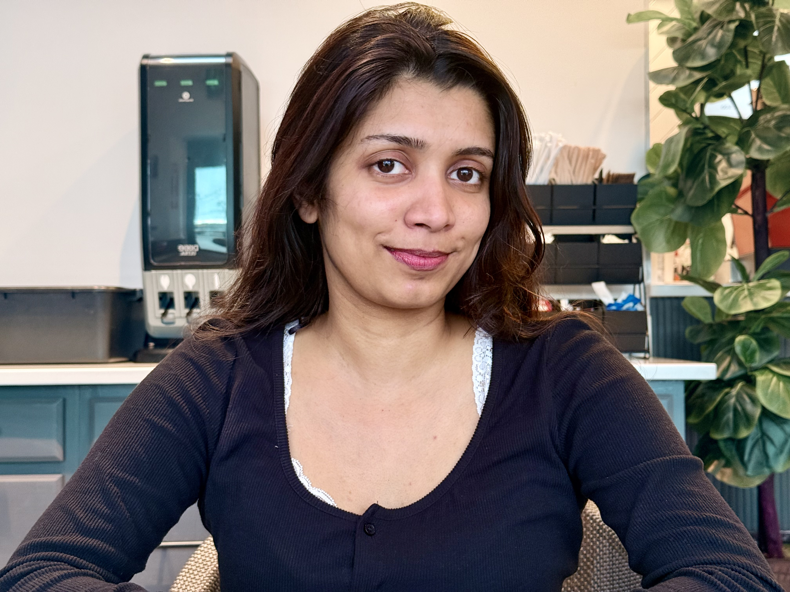

Public Health Researcher & Clinician
Bridging Clinical Care, Public Health & Implementation Science
📍 Boston, MA
I am a multilingual public health researcher with dual clinical training — a Bachelor of Dental Surgery (BDS) and a Master of Science in Public Health Research (Translational & Implementation Science) from Boston University.
My work sits at the intersection of clinical practice, evidence-based research, and data-driven decision-making. I bring hands-on experience across NIH-funded studies, hospital coordination, surgical care, and healthcare data analytics.
I am passionate about translating research into real-world health improvements for underserved communities.
Supported NIH All of Us Research Program at Boston Medical Center. Screened and recruited 500+ participants from diverse populations for the Nutrition for Precision Health study — a joint effort between Tufts Medical Center and Boston Medical Center — contributing to precision medicine advancement.
Designed and led a survey of 600 patients to analyze oral cancer awareness. Performed statistical analysis in RStudio and created Python-generated figures for publication. Achieved a 30% improvement in awareness scores through 600+ education sessions.
Developed Excel Power Query (M-code) workflows to automate quarterly psychiatric data reports for 2,000+ patient records. Reduced manual processing time by 90%. Created dashboards improving visibility of patient progress scores, clinician utilization, and retention rates.
Applied theoretical frameworks including the Consolidated Framework for Implementation Research (CFIR) and Technology Acceptance Model (TAM) to evaluate AI-driven asthma management implementation strategies, analyzing barriers and facilitators across health systems.
Conducted quantitative analysis of the PATH dataset using R to examine tobacco use patterns and health outcomes. Applied complex survey methods and regression analyses to generate population-level insights.
Designed a single-site study from inception to execution — created 10+ data collection tools using REDCap, Canva, and MS Office. Surveyed 120+ non-research personnel on attitudes toward clinical research to inform institutional training needs.
Track: AI-Driven Healthcare — Bridging Systems Science and Clinical Practice
Reviewed 5+ manuscripts on cutting-edge AI in healthcare topics, providing critical feedback on methodology and implementation science approaches.